##
## Attaching package: 'dplyr'## The following object is masked from 'package:MASS':
##
## select## The following objects are masked from 'package:stats':
##
## filter, lag## The following objects are masked from 'package:base':
##
## intersect, setdiff, setequal, union## # A tibble: 1,379 × 6
## earn height sex race ed age
## <dbl> <dbl> <fctr> <fctr> <int> <int>
## 1 79571.30 73.89 male white 16 49
## 2 96396.99 66.23 female white 16 62
## 3 48710.67 63.77 female white 16 33
## 4 80478.10 63.22 female other 16 95
## 5 82089.35 63.08 female white 17 43
## 6 15313.35 64.53 female white 15 30
## 7 47104.17 61.54 female white 12 53
## 8 50960.05 73.29 male white 17 50
## 9 3212.65 72.24 male hispanic 15 25
## 10 42996.64 72.40 male white 12 30
## # ... with 1,369 more rows## # A tibble: 48 × 5
## state abbr low murder tc2009
## <fctr> <fctr> <int> <dbl> <dbl>
## 1 Alabama AL -27 7.1 4337.5
## 2 Alaska AK -80 3.2 3567.1
## 3 Arizona AZ -40 5.5 3725.2
## 4 Arkansas AR -29 6.3 4415.4
## 5 California CA -45 5.4 3201.6
## 6 Colorado CO -61 3.2 3024.5
## 7 Connecticut CT -32 3.0 2646.3
## 8 Delaware DE -17 4.6 3996.8
## 9 Florida FL -2 5.5 4453.7
## 10 Georgia GA -17 6.0 4180.6
## # ... with 38 more rows## tc2009 ~ low## [1] "formula"library(ggplot2)
library(dplyr)
options(stringsAsFactors = FALSE)Download the comparison of wealth and of human growth and other demographic characteristics from 1379, which was collected in 1994. This is simulated data based on real data collected with Gelman and hill.
wages <- read.csv("https://dl.dropboxusercontent.com/s/oq4dc134y8xdyce/wages.csv?dl=0")
tbl_df(wages)## # A tibble: 1,379 × 6
## earn height sex race ed age
## <dbl> <dbl> <chr> <chr> <int> <int>
## 1 79571.30 73.89 male white 16 49
## 2 96396.99 66.23 female white 16 62
## 3 48710.67 63.77 female white 16 33
## 4 80478.10 63.22 female other 16 95
## 5 82089.35 63.08 female white 17 43
## 6 15313.35 64.53 female white 15 30
## 7 47104.17 61.54 female white 12 53
## 8 50960.05 73.29 male white 17 50
## 9 3212.65 72.24 male hispanic 15 25
## 10 42996.64 72.40 male white 12 30
## # ... with 1,369 more rowsAnother set of data trying to verify the existence of a relationship between climate and crime in various U.S. States.
crime <- read.csv("https://dl.dropboxusercontent.com/s/cecck1nuo217zy1/crime.csv?dl=0")
tbl_df(crime)## # A tibble: 48 × 5
## state abbr low murder tc2009
## <chr> <chr> <int> <dbl> <dbl>
## 1 Alabama AL -27 7.1 4337.5
## 2 Alaska AK -80 3.2 3567.1
## 3 Arizona AZ -40 5.5 3725.2
## 4 Arkansas AR -29 6.3 4415.4
## 5 California CA -45 5.4 3201.6
## 6 Colorado CO -61 3.2 3024.5
## 7 Connecticut CT -32 3.0 2646.3
## 8 Delaware DE -17 4.6 3996.8
## 9 Florida FL -2 5.5 4453.7
## 10 Georgia GA -17 6.0 4180.6
## # ... with 38 more rowsYou already have a General idea of regression and some equation \(y_{i}=N\big(\alpha+\beta_{i}x_{i}+\sigma\big)\), which in General terms describes. Actually, that is not difficult to notice that the dependence is linear, this linear regression equation. This is the easiest of all possible options, but because it is the most clear. So we’ll start with him.
In the future we will examine other variants of regression, and even if you in your study it is immediately clear that your data is not described by a linear dependence,it is strongly recommended nachinaet his study with linear dependencies.
As dependence is linear, the graphical plotting of the data should be straight, what does this video have to go through the main data array. It’s pretty obvious that in almost any large data set is placed on the chart can hold a lot of lines, which will in one way or another to describe the dependence of the quantities from each other. And the question arises how to choose the most direct, which will describe our data in the best way.
In statistics priyant most appropriate to consider this direct, residual sum of squares(residuals) of which will be minimal. Remains know the vertical distance from each data point to the nearest point of the line or \(Residuals=y_{i}-f\big(x_{i}\big)\), their other name is rejection. Because each residue can be a great sign, and we are interested in the absolute value of all the residues, as each of them essentially characterizes the accuracy of the model, it summed up not remnants themselves and their squares. Thus, the final resulting quality model Velicina will be called the sum of squared deviations(RSS) and will have the form \(RSS=\Sigma\big(y_{i}-f\big(x_{i}\big)\big)^{2}\)
It is obvious that R already there are ready decisions for the selection of the coefficients of the straight line, which for these data will give the minimum sum of squares of deviations. Meanwhile, as in any other solution, your role most accurately “explain” the language that you want from him.
To obtain the linear regression equations in R there exists a function lm. It is part of a large family of functions is used for modeling and uses similar syntax.
| variable for model storage | Feature initiation of the linear model | Basic formula: response ~ indicators | data table |
|---|---|---|---|
| mod | = lm( | tc2009 ~ low, | data = crime) |
mod = lm(tc2009 ~ low, data = crime)In R, there exists a special class of data called “formulas”, developed for the description of dependencies between objects. In order to create such a dependence in R, use the tilde symbol - ~
tc2009 ~ low## tc2009 ~ lowclass(tc2009 ~ low)## [1] "formula"In fact, the record y ~ x, in R is equivalent to mathematical notation \(y_{i}=N\big(\alpha+\beta_{i} x_{i}+\sigma\big)\). For you as user it is important to always remember that or described the dependent variable is always in such records on the left, i.e. the “dependent variable” ~ “independent variable”. Or for the case y ~ x : the dependence y from x, but not as the reverse.
As mentioned previously, this syntax is typical not only for the function lm. In a family of similar functions belong lmer,lme,rlm,glm,gam, etc., some of which we will discuss later.
Back to our model, which attempts to describe the dependence of the number of crimes in 2009 from the minimum observed temperature at this territory during that time. In order to see which coefficients we calculated R, contact to the content model of this object - mod
mod##
## Call:
## lm(formula = tc2009 ~ low, data = crime)
##
## Coefficients:
## (Intercept) low
## 4256.86 21.65In fact, the model object contains much more information than is displayed in the standard output, so the model objects it is always better to save in a separate variable. To see the complexity of the object model, you can perform the following command:
names(mod)## [1] "coefficients" "residuals" "effects" "rank"
## [5] "fitted.values" "assign" "qr" "df.residual"
## [9] "xlevels" "call" "terms" "model"There is a standard approach when working with models in R, it briefly describes the storage and study. Its essence boils down to two simple actions - save a model object in memory under a variable and perform a number of functions on this object to retrieve the data for the study of the function of the object.
For such functions includes the following three functions that provide the minimum required functionality for the study of functions.
You already know the function summary, which provides us with General information about the object, in this case, we will receive General information on the model:
summary(mod)##
## Call:
## lm(formula = tc2009 ~ low, data = crime)
##
## Residuals:
## Min 1Q Median 3Q Max
## -1134.36 -647.13 98.03 533.62 1344.30
##
## Coefficients:
## Estimate Std. Error t value Pr(>|t|)
## (Intercept) 4256.86 233.44 18.236 < 2e-16 ***
## low 21.65 5.33 4.061 0.000188 ***
## ---
## Signif. codes: 0 '***' 0.001 '**' 0.01 '*' 0.05 '.' 0.1 ' ' 1
##
## Residual standard error: 649.9 on 46 degrees of freedom
## Multiple R-squared: 0.2639, Adjusted R-squared: 0.2479
## F-statistic: 16.49 on 1 and 46 DF, p-value: 0.000188The function predict() (prediction) calculates values you are interested in the variable(column in table) for each of its values. I.e. for all existing values of your variable will be calculated the value of this variable based on your model, so you can find out how much your model’s predicted values differ from the real data.
predict(mod)## 1 2 3 4 5 6 7 8
## 3672.386 2525.082 3390.972 3629.091 3282.735 2936.379 3564.150 3888.858
## 9 10 11 12 13 14 15 16
## 4213.567 3888.858 4516.629 2958.027 3477.561 3239.441 3390.972 3455.913
## 17 18 19 20 21 22 23 24
## 3910.506 3217.794 3390.972 3499.208 3152.852 3845.564 3390.972 2741.554
## 25 26 27 28 29 30 31 32
## 3239.441 3174.499 3239.441 3520.855 3174.499 3131.205 3520.855 2958.027
## 33 34 35 36 37 38 39 40
## 3412.619 3672.386 3087.910 3347.677 3715.680 3845.564 3001.321 3564.150
## 41 42 43 44 45 46 47 48
## 3758.975 2763.201 3174.499 3607.444 3217.794 3455.913 3066.263 2828.143The function resid() (or the remnants of the deviations) will count the difference between each existing value of the output variable predicted by your model the result of (what you believed previous function).
resid(mod)## 1 2 3 4 5
## 665.114163 1042.018405 334.228411 786.308663 -81.135339
## 6 7 8 9 10
## 88.120658 -917.849587 107.941665 240.132917 291.741665
## 11 12 13 14 15
## -573.828580 -702.426592 194.439412 -508.540840 270.428411
## 16 17 18 19 20
## -631.913338 538.694415 -692.793590 397.428411 -704.407838
## 21 22 23 24 25
## 207.848160 -202.963835 531.928411 86.345907 -55.540840
## 26 27 28 29 30
## 590.500910 -786.540840 -1134.355088 1344.300910 -818.204590
## 31 32 33 34 35
## 622.844912 -725.826592 282.481162 475.814163 160.589909
## 36 37 38 39 40
## -739.577089 -844.780336 716.636165 -975.121091 868.450413
## 41 42 43 44 45
## 749.625164 761.798657 -597.299090 -921.344087 866.106410
## 46 47 48
## -418.513338 -193.962841 5.056907As already mentioned earlier, the linear model is the most primitive, and therefore better amenable to interpretation \(y_{i}=\alpha+\beta x+\epsilon\)
\(\alpha\) is the value of our variable at x equal to 0.
\(\beta\) the expected rise in the value of y caused by an increase in x by one unit
To obtain the coefficients of your model you can use the following functions is absolutely identical:
coef(mod)## (Intercept) low
## 4256.86158 21.64725coefficients(mod)## (Intercept) low
## 4256.86158 21.64725Their results may not seem very clear, but it is enough to recall that the \(\alpha\) is the point at which video describing our model intercepts the y-axis and it becomes pretty obvious that the value of Intercept is not that other, as the coefficient \(\alpha\). Well, the rest is set to low, the coefficient \(\beta\).
Thus for our deliriou variable tc2009 value when low = -10 will be 4256.86 + 21.6 * (-10) = 4040.86. Changing a variable low per unit will change at 21.6 variable tc2009
We construct a graph, zavisimoti predicted by values of the independent variable is low, use this function predict()
qplot(low, predict(mod), data = crime, geom = "line")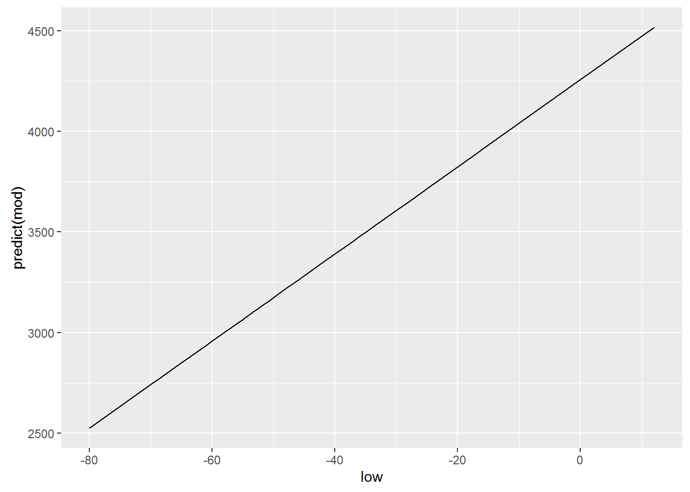
Logically, for building this graph we used geom = “line”, which is equivalent to using the +geom_line(), because our dependence is linear and is exactly the type of graph that we want to. Meanwhile, ggplot allows us to build a model of the model directly when creating graphics, and, oddly enough, we’ve done this in previous lessons. For this there is already well-known to us geometry geom_smooth(). However to get similar to the previous graph, we need to explicitly declare your functions, the type of geometry that we have ispolzovali, i.e. geom_smooth(method=lm), respectively ggplot will know that our model will have obsi view lm(x~y, crime). Add a parameter se=FALSE will remove the confidence intervals, which often mislead than help.
qplot(low, tc2009, data = crime) +
geom_smooth(method = lm)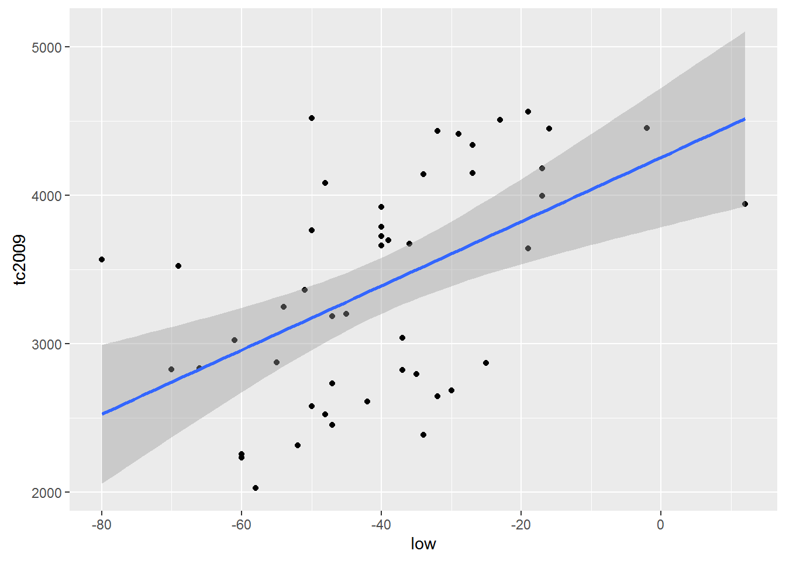
qplot(low, tc2009, data = crime) +
geom_smooth(se = FALSE, method = lm)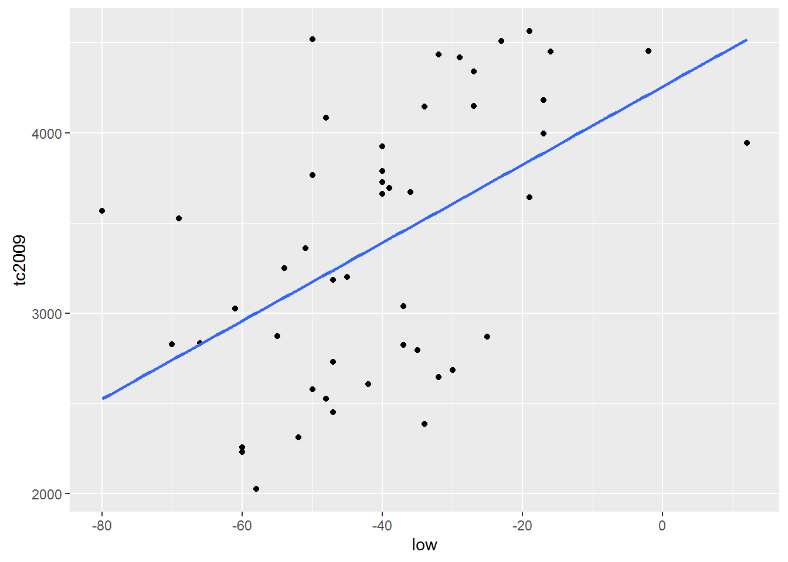
Important. By default R tries to add \(\alpha\) in every linear model . Ie R model builds on the assumption that \(\alpha\) is not equal to 0. Meanwhile, we can force R to build a model based on the fact that \(\alpha\) is equal to 0. I.e. schedule of our funkyyy must necessarily pass through the coordinates (0, 0).
To R came from the fact that \(\alpha\) is equal to 0 in the model formula need to add 0 or -1. Add to formula +1 makes R cost model is based on the fact that \(\alpha\) is not equal to 0. Consider the following examples:
Include \(\alpha\) in the model
lm(tc2009 ~ 1 + low, data = crime)##
## Call:
## lm(formula = tc2009 ~ 1 + low, data = crime)
##
## Coefficients:
## (Intercept) low
## 4256.86 21.65lm(tc2009 ~ low, data = crime)##
## Call:
## lm(formula = tc2009 ~ low, data = crime)
##
## Coefficients:
## (Intercept) low
## 4256.86 21.65qplot(low, predict(lm(tc2009 ~ 1 + low, data = crime)), data = crime, geom = "line")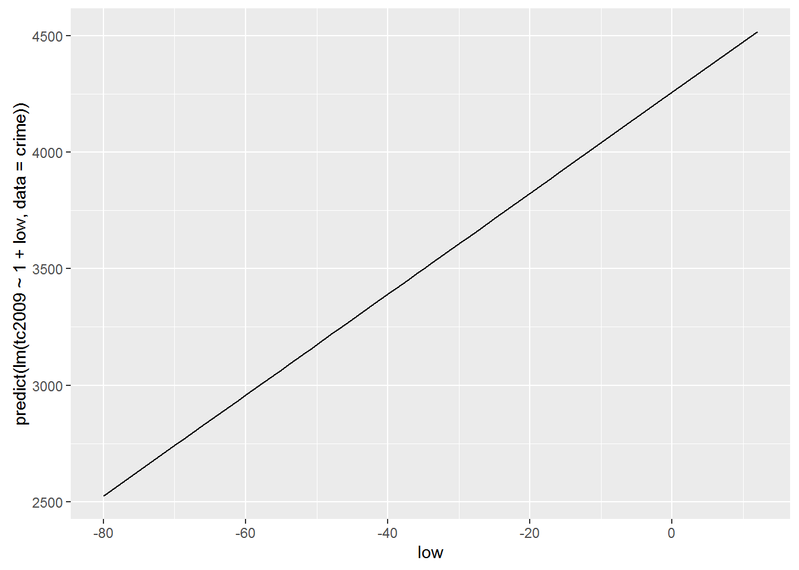
Exclude \(\alpha\) from the model
lm(tc2009 ~ low - 1, data = crime)##
## Call:
## lm(formula = tc2009 ~ low - 1, data = crime)
##
## Coefficients:
## low
## -67.36lm(tc2009 ~ 0 + low, data = crime)##
## Call:
## lm(formula = tc2009 ~ 0 + low, data = crime)
##
## Coefficients:
## low
## -67.36qplot(low, predict(lm(tc2009 ~ low - 1, data = crime)), data = crime, geom = "line")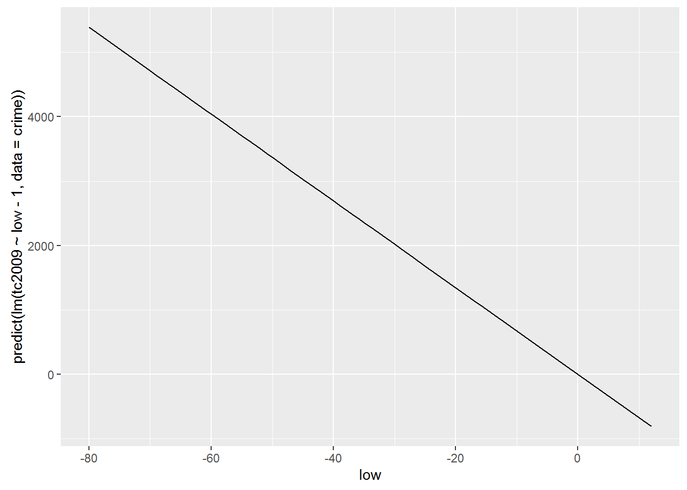
As you may have noticed the inclusion or exclusion of $$ is radically changing our model. Therefore, such admission is resorted to only in cases when you are sure that your function passes or does not pass through the origin.
Now let’s use another data set that we have already managed to load wages. This table contains the data that were collected to attempt to describe the dependence of earnings from its growth. Let’s build a model that would describe such a relationship and try to interpret the result.
hmod <- lm(earn ~ height, data = wages)
coef(hmod)## (Intercept) height
## -126523.359 2387.196Let’s substitute the obtained coefficients in the General linear regression equation \(earn=\alpha+\beta\times height+\epsilon\). As a result, we get the following equation:
\(earn=-126523.36+2387.20\times height+\epsilon\)
Let us recall that present at the end of the polynomial \(\epsilon\) is an indication that our model may not be absolute accurate, but because there is always a deviation from the real data. All these deviations and represented by the element \(\epsilon\). Because we do not know the error for each particular value in the performance equation we will take \(\epsilon\) is zero, but remember that the deviation exists.
Growth data are presented in inches. Therefore, for a person with a height of 68 inches(1.72 meters) calculated according to our model, the salary will be
\(earn=-126523.36+2387.20\times 68+\epsilon\)
\(earn=35806.24\)
Another fairly simple conclusion from our Moodle is that uvelichenie growth 1 inch should lead to a rise in revenues of $2387.20 per year.
qplot(height, earn, data = wages, alpha = I(1/4)) +
geom_smooth(se = FALSE, method = lm) + theme_bw()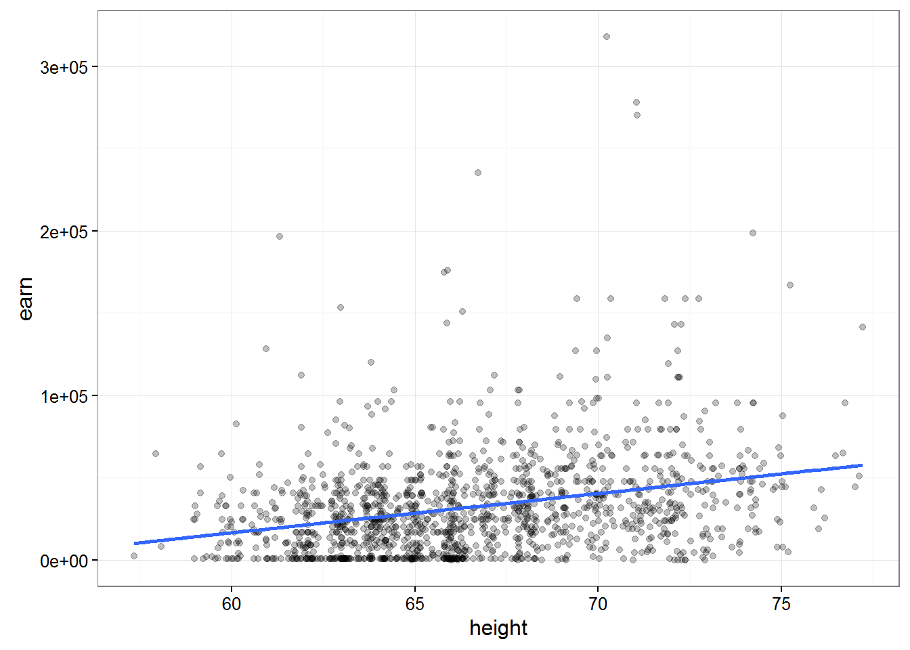 ##### Let’s sum up a little
The fit of the model R consists of 3 stages:
Description of the relations we are interested in variables with formulas:earn ~ height
The use of special formulas for “fit”(creation) of patterns previously defined formula: mod <- lm(earn ~ height, data = wages)
Analysis of the result in various ways: summary(mod) plot(mod)
It’s pretty obvious that it is fashionable to obtain models describing the relations between completely unrelated data. Then we come to the question of how can we be sure that the connection that we “found” the model exists and is anything like accurate. The smallest sum of squared deviations, and of course a good indicator, but we must understand that this indicator does not guarantee us anything.
If you go back from a General description to a more statistical model, which we receive through R, represents only the small amount of data that we have, or sampling. We are always interested in a model that describes the population. Thus, most in our model we are interested in how much it differs from the General population.
Let’s load the data which contain absolutely 100 randomly selected values from the previous nubra data and plot obtained data.
w1 <- read.csv("https://dl.dropboxusercontent.com/s/qnybbt5sxiedsd7/w1.csv?dl=0")
qplot(height, earn, data = w1) + geom_smooth(method = lm, se = F)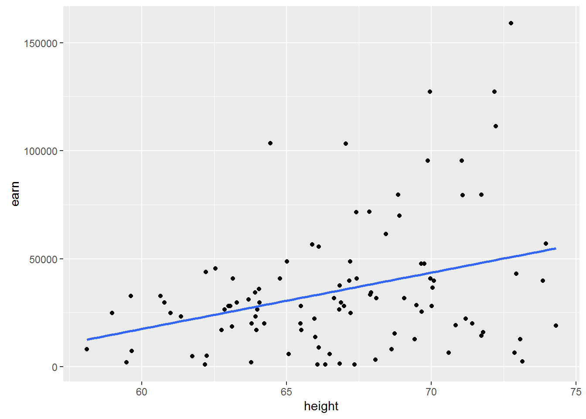
Construct a similar chart for the whole amount of available data.
qplot(height, earn, data = wages) + geom_smooth(method = lm, se = F)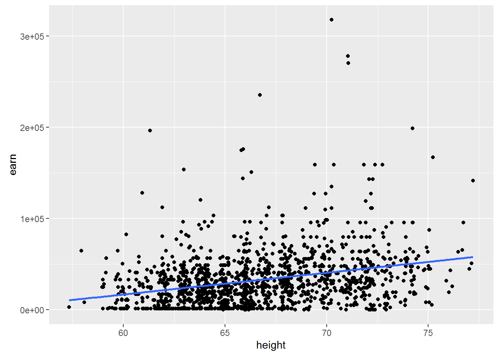
Let us ask ourselves the question of what will happen if we take another sample? Whether \(\beta\) = \(\beta\) if we take another sample? Probably not. Whether \(\beta\) = 0, if we take another sample? Possible.
You should make an important digression. The value of \(\beta\) = 0 is very different in its importance for us from all other values, because it would mean that changing the independent variable does not change the dependent variable. In other words, it will mean that we have no communication between our peremennymi.
And what inetrval which are all possible values of \(\beta\)?
To answer this question there are two instrumental approach - approaches for reasoning about the uncertainty of the model parameters
If the model satisfies a number of assumptions, it is possible to calculate the probability of observing a certain β, even while the true β=0. If you remember your College statistics, you will realize that we are just many other words have formulated the null hypothesis for regressionnogo analysis. Which consisted in the fact that the General slope of the regression line β is equal to zero.
In order to understand this deeper, let’s consider a specific example. To do this go back to the model based on earnings growth: hmod:
{r} summary(hmod)
Consider the details offered to us the results. # Estimate Std. Error t value Pr(>|t|) # 2387 211 height 11.312 <2e-16 ***
The probability that \(\beta_{height} >= 2387\) under the condition that the true \(\beta=0\) in the example presented to us is almost equal to 2E-16 (almost 0). Or in other words, the probability of the null hypothesis of equal vvelichine extremely small, and therefore we can say that \(\beta\) not equal to zero.
To be precise, low p-values ( < 0.05) may be the result of the following events 1. We have a very unrepresentative sample 2. The true β of the General population is not equal to 0 3. Our model is in principle not correct
There is a logical question, but if we have proved that β is not zero, then what is it equal. Unfortunately we have no other information other than that obtained from the model, so it is safest to assume that β = 2387.
Note, however, that we found the most probable point value of β in repeated measurements may be different. To characterize this uncertainty, it is necessary to calculate the confidence interval does not contradict the available data, the range of values in which the true value of our values with a certain probability (e.g. 95%). Roughly assess the limits of confidence interval, assuming approximately 95% of all values of the distribution of estimates of β lie in the range of ±2\(SE{\beta}\) relative to its average value, where \(SE{\beta}\) – standard error of the parameter β. However, the uncertainty exists in the estimation of the parameter β, but the estimation of its standard deviation for the corresponding normal distribution. Without going into detail, we note that in connection with this circumstance the more accurate bounds of the confidence interval will give the calculations based on the properties of student’s t - distribution. Then the 95% confidence interval for the parameter β will be: β ± \(t_{0.975}SE{\beta}\), where \(t_{0.975}\) – 0.975-quantile t-distribution with (n - p) degrees of freedom, n is the sample size and p is the number of model parameters.
Get the most from the interval for a given precision is possible with the following command:
confint(hmod, level = 0.95)## 2.5 % 97.5 %
## (Intercept) -154135.798 -98910.920
## height 1973.228 2801.163Once again, given us the figures mean that we can with 95% probability to assert that the value of β is in the us range from 1973.228 to 2801.163.
Let’s consider again the data on the relationship between temperature and crime
mod <- lm(tc2009 ~ low, data = crime)
summary(mod)##
## Call:
## lm(formula = tc2009 ~ low, data = crime)
##
## Residuals:
## Min 1Q Median 3Q Max
## -1134.36 -647.13 98.03 533.62 1344.30
##
## Coefficients:
## Estimate Std. Error t value Pr(>|t|)
## (Intercept) 4256.86 233.44 18.236 < 2e-16 ***
## low 21.65 5.33 4.061 0.000188 ***
## ---
## Signif. codes: 0 '***' 0.001 '**' 0.01 '*' 0.05 '.' 0.1 ' ' 1
##
## Residual standard error: 649.9 on 46 degrees of freedom
## Multiple R-squared: 0.2639, Adjusted R-squared: 0.2479
## F-statistic: 16.49 on 1 and 46 DF, p-value: 0.000188As you can see, the model tells us that there is a significant relationship between cold temperatures and crime rates. On the other hand, it is difficult to imagine what is the real connection between cold temperatures and crime.
This example should remind you that low p values do not necessarily mean non-zero \(\beta\). And in this case more correct to assume that we selected the wrong model or our sample is very unfortunate.
What are ways to make the right conclusion from the obtained models? Let’s look at how divided our data by constructing graphs, two tables, whose data models we have built.
qplot(low, tc2009, data = crime)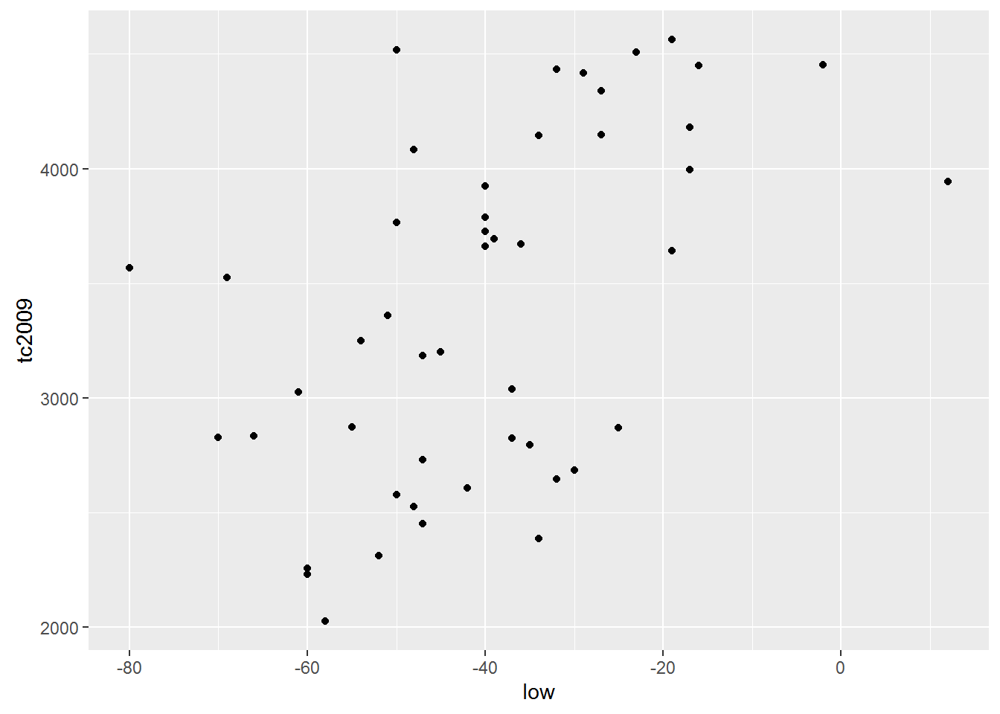
qplot(height, earn, data = wages)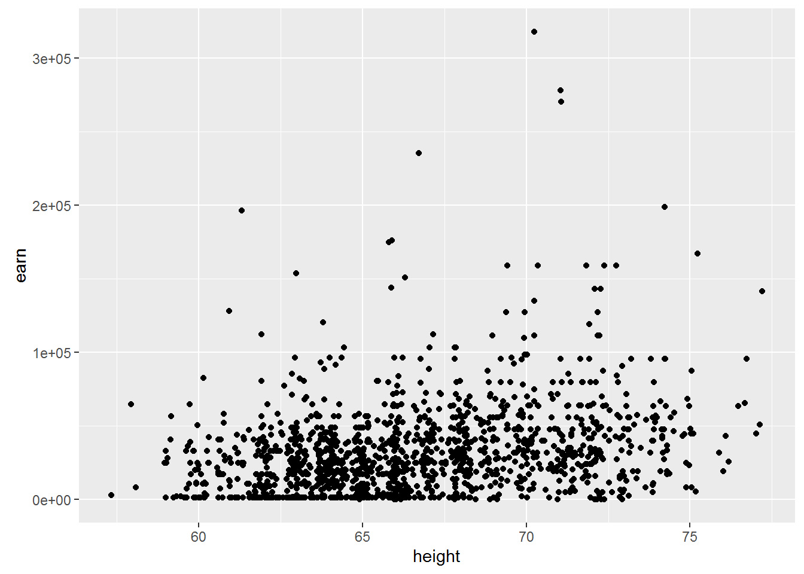
The first thing that catches the eye is that for the first model the linear dependence is entirely appropriate. But the dependence between the variables in the second data table is unlikely to be linear.
The object contains the model data for plotting on the verification of several assumptions. First of all we should check the assumption of normality of the data distribution.
plot(mod)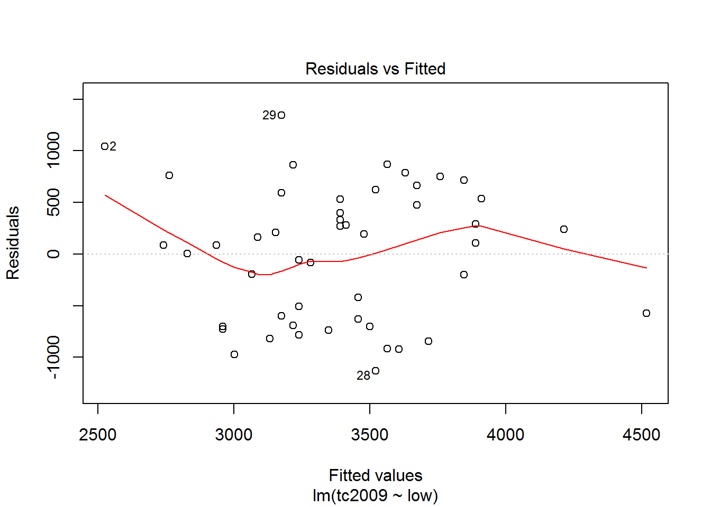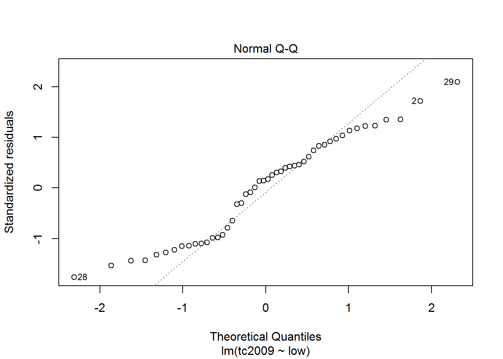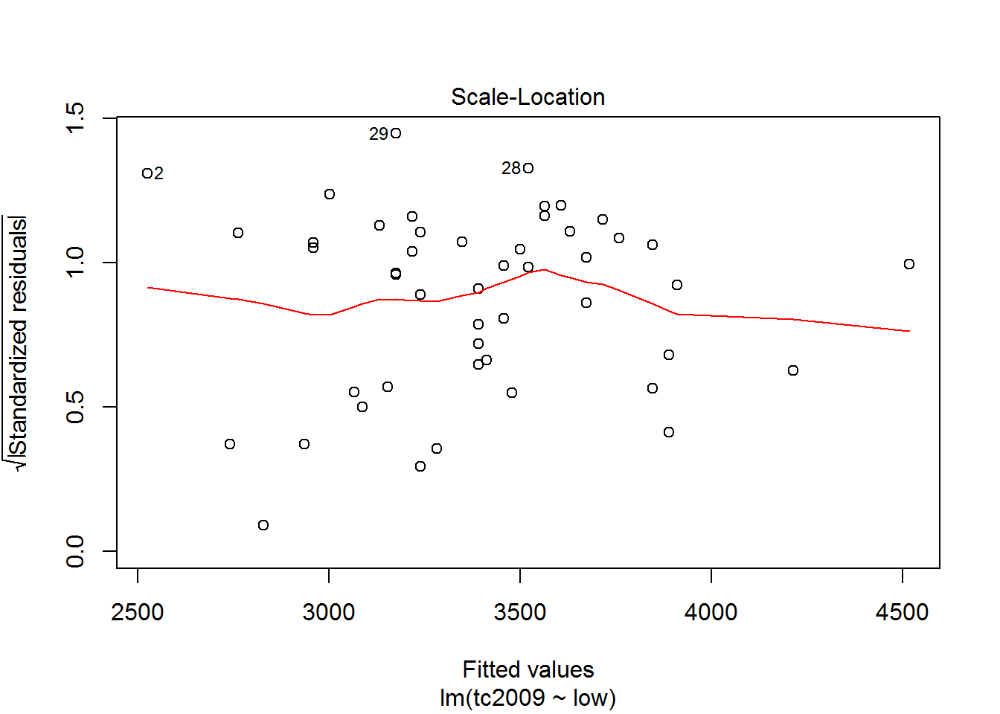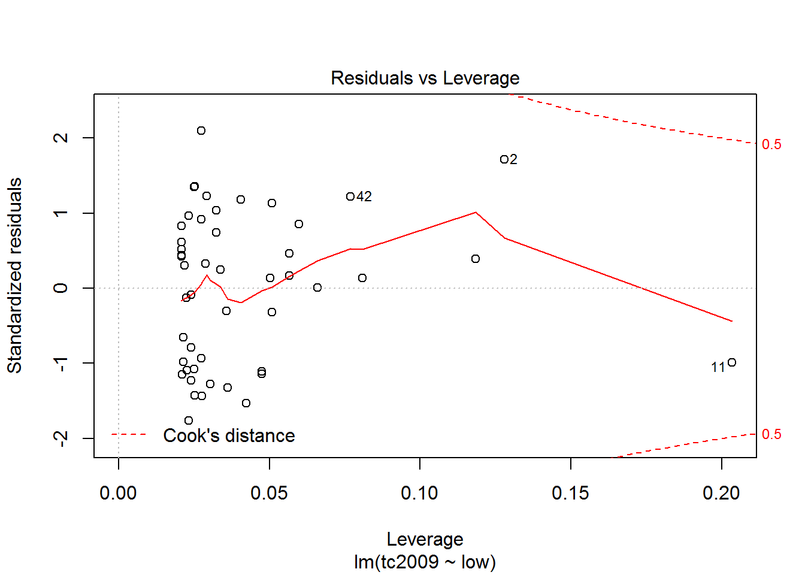
The first and third graphs - Residuals vs. Fitted and Scale-Location show the dependence of the deviations from the predicted model values. If the graph can be traced at least some dependence, this means that deviations are not random and there is some factor affecting the dependent variable under study, and hence we must complicate our model.
The second graph Normal Q-Q shows the distribution of variances for the quantiles. The closer the distribution is to the line, the greater the chance that our deviation is normally distributed.
Using the latest graphics you can opredelit points that are very different from the others and thus lead to strong deviations in the model. On the chart the discontinuous line shows the area at the exit point beyond which you should pay close attention to them. If such points exist, we should create an alternative data set, without these points, to build a new model for the alternative data set and choose the best.